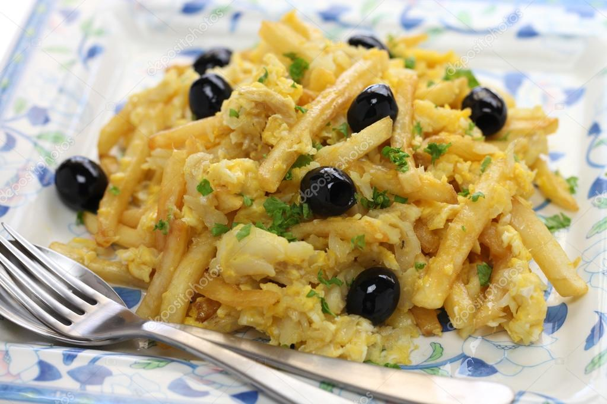
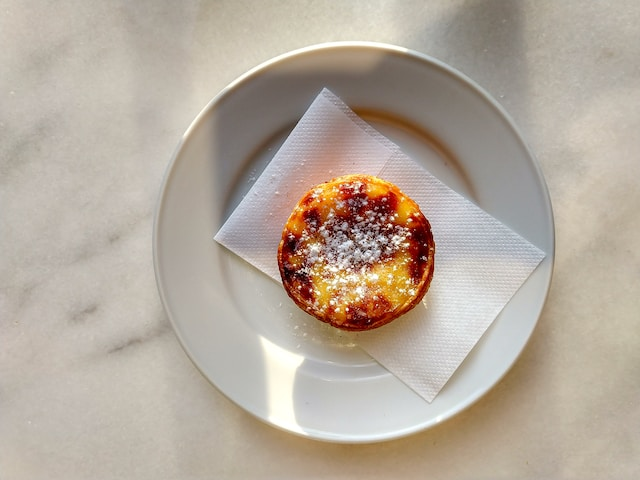
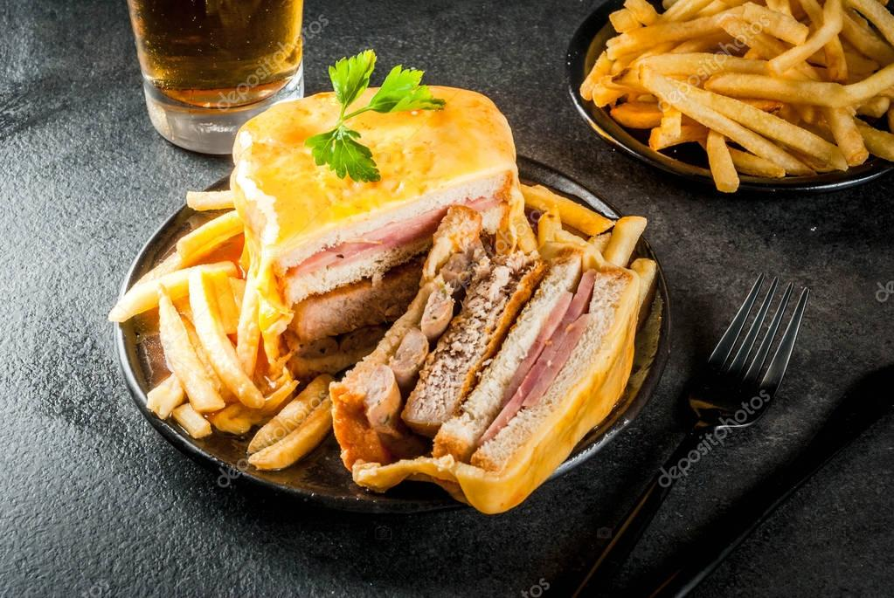

Bacalhau: Tuzlu morina balığı, Portekiz mutfağının vazgeçilmezidir. Farklı tarifleriyle her damak zevkine hitap eder.
Pasteis de Nata: Yumurta tatlısı pastaları, nefis kreması ve çıtır hamuruyla meşhurdur. Bir dilim asla yeterli gelmez!
Francesinha: Porto'nun ünlü sandviçi, sosis, dana eti ve peynirle dolu bir lezzet şöleni sunar.
